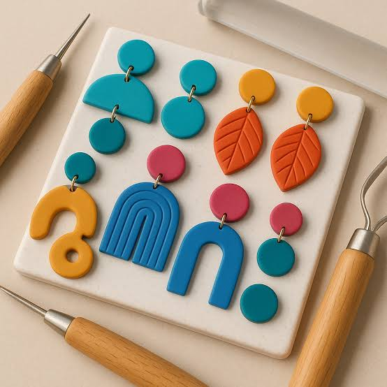
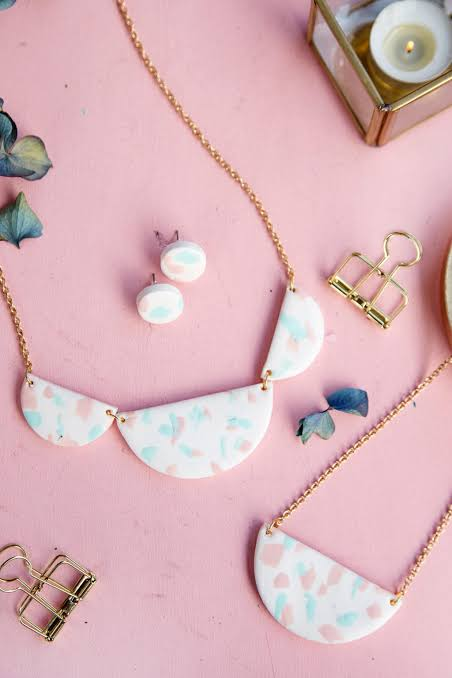
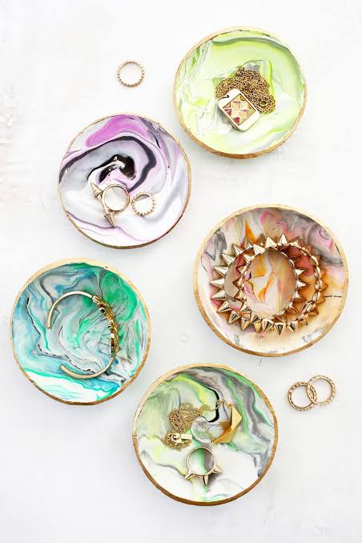

Polymer clay jewelry is jewelry made from polymer clay, a synthetic modeling material composed primarily of PVC particles, plasticizers, and pigments. The clay is soft and moldable at room temperature and hardens when baked in a household oven.
Polymer clay jewelry can include:
🔮Earrings
🔮Necklaces
🔮Bracelets
🔮Rings
🔮Pendants
🔮Brooches
🔮Lightweight and comfortable to wear
🔮Available in many colors and patterns
🔮Can imitate materials such as stone, marble, wood, or ceramic
🔮Handmade and highly customizable
🔮Durable when properly baked and finished
Popular brands of polymer clay used for jewelry making include Sculpey, FIMO, and Cernit.
Polymer clay jewelry is decorative wearable accessories crafted from polymer clay that is shaped, cured by baking, and finished to create durable, lightweight, and colorful jewelry pieces.
🎨 + 💎 = Creative handmade jewelry
👐 + 👂 = Handmade earrings
🌈 + 🧿 = Colorful polymer clay accessories
🔥 + 💎 = Baked polymer clay jewelry


